With the pandemic in full swing, craft breweries across the nation are closing their doors. Social distancing and other precautionary stay at home orders have forever changed the market for craft beer. This presents a unique opportunity to Anheuser-Busch InBev. In many ways, the market is wide open. Craft beer, especially IPA's and ales in the US can be shown to follow certain trends with regards to bitterness and ABV. Adhering to these trends may help ensure, when choosing which breweries to procure for example, that an investment is successful.
With the craft beer data provided by Anheuser-Busch InBev, this report will depict the apparent relationship between alcohol by volume(ABV) and international bitterness units(IBU) for myriad beers across the United States. The report also provides summary statistics such as minimums, medians and maximums with respect to ABV and IBU, as well as a deeper look in to the difference between IPA's and "Other Ale's"(any beer with Ale in the name) with respect to ABV and IBU. Our analysis reveals information that could be useful to Anheuser-Busch InBev concerning beer volumes in ounces as they relate to each state of the US.
The beers and breweries dataset provided by Anheuser-Busch InBev contain information about 2410 US craft beers and 558 US breweries. The datasets are as follows:
Beers.csv:
* Name: Name of the beer.
* Beer_ID: Unique identifier of the beer.
* ABV: Alcohol by volume of the beer.
* IBU: International Bitterness Units of the beer.
* Brewery_ID: Brewery id associated with the beer.
* Style: Style of the beer.
* Ounces: Ounces of beer.
Breweries.csv:
* Brew_ID: Unique identifier of the brewery.
* Name: Name of the brewery.
* City: City where the brewery is located.
* State: U.S. State where the brewery is located.
This report is tasked with:
* analyzing the number of breweries in each state in the US
* correcting missing IBU Data
* analyzing minimum, median, and maximum ABV and IBU for each state
* providing general summary statistics for ABV
* determining if a relationship between IBU and ABV exists
* analyzing the IBU and ABV relationship for IPA's vs other Ales
* providing other meaningful insight
Note: we use the merge data in Question 1 and therefore we need to perform step 2 first.
| Brewery_id | Drink_name | Beer_ID | ABV | IBU | Style | Ounces | Brewery | City | State |
|---|---|---|---|---|---|---|---|---|---|
| 1 | Get Together | 2692 | 0.045 | 50 | American IPA | 16 | NorthGate Brewing | Minneapolis | MN |
| 1 | Maggie's Leap | 2691 | 0.049 | 26 | Milk / Sweet Stout | 16 | NorthGate Brewing | Minneapolis | MN |
| 1 | Wall's End | 2690 | 0.048 | 19 | English Brown Ale | 16 | NorthGate Brewing | Minneapolis | MN |
| 1 | Pumpion | 2689 | 0.060 | 38 | Pumpkin Ale | 16 | NorthGate Brewing | Minneapolis | MN |
| 1 | Stronghold | 2688 | 0.060 | 25 | American Porter | 16 | NorthGate Brewing | Minneapolis | MN |
| 1 | Parapet ESB | 2687 | 0.056 | 47 | Extra Special / Strong Bitter (ESB) | 16 | NorthGate Brewing | Minneapolis | MN |
| Brewery_id | Drink_name | Beer_ID | ABV | IBU | Style | Ounces | Brewery | City | State | |
|---|---|---|---|---|---|---|---|---|---|---|
| 2405 | 556 | Pilsner Ukiah | 98 | 0.055 | NA | German Pilsener | 12 | Ukiah Brewing Company | Ukiah | CA |
| 2406 | 557 | Heinnieweisse Weissebier | 52 | 0.049 | NA | Hefeweizen | 12 | Butternuts Beer and Ale | Garrattsville | NY |
| 2407 | 557 | Snapperhead IPA | 51 | 0.068 | NA | American IPA | 12 | Butternuts Beer and Ale | Garrattsville | NY |
| 2408 | 557 | Moo Thunder Stout | 50 | 0.049 | NA | Milk / Sweet Stout | 12 | Butternuts Beer and Ale | Garrattsville | NY |
| 2409 | 557 | Porkslap Pale Ale | 49 | 0.043 | NA | American Pale Ale (APA) | 12 | Butternuts Beer and Ale | Garrattsville | NY |
| 2410 | 558 | Urban Wilderness Pale Ale | 30 | 0.049 | NA | English Pale Ale | 12 | Sleeping Lady Brewing Company | Anchorage | AK |
There are a range of breweries for state and they are visible in the state. This could be due to a variety of reasons such as taxation, availability and cost of materials, releastate, demographics or that state etc. In our dataset, Colorado for example has 47 craft breweries and California has 39 craft breweries and Arizona has 11. This dataset obviously does not represent all craft breweries in the state, so it is important to note that it is the relative proportion of craft breweries we are interested in here. In many cases, the craft brewery number is most likely tied to state population. See the Pie chart for the breakdown. See Table:
## `summarise()` ungrouping output (override with `.groups` argument)## [1] "Total Unique Breweries: "## [1] 558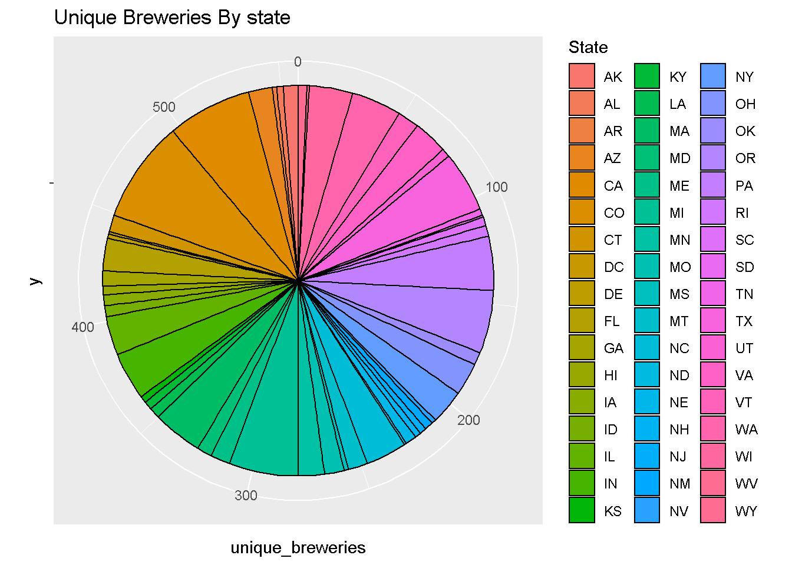
## Warning in plot.aggr(res, ...): not enough horizontal space to display frequencies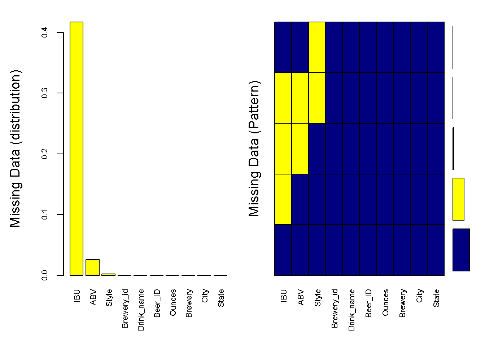
##
## Variables sorted by number of missings:
## Variable Count
## IBU 0.417012448
## ABV 0.025726141
## Style 0.002074689
## Brewery_id 0.000000000
## Drink_name 0.000000000
## Beer_ID 0.000000000
## Ounces 0.000000000
## Brewery 0.000000000
## City 0.000000000
## State 0.000000000## Brewery_id Drink_name Beer_ID ABV IBU Style Ounces Brewery
## Min. : 1.0 Length:2410 Min. : 1.0 Min. :0.00100 Min. : 4.00 Length:2410 Min. : 8.40 Length:2410
## 1st Qu.: 94.0 Class :character 1st Qu.: 808.2 1st Qu.:0.05000 1st Qu.: 21.00 Class :character 1st Qu.:12.00 Class :character
## Median :206.0 Mode :character Median :1453.5 Median :0.05600 Median : 35.00 Mode :character Median :12.00 Mode :character
## Mean :232.7 Mean :1431.1 Mean :0.05977 Mean : 42.71 Mean :13.59
## 3rd Qu.:367.0 3rd Qu.:2075.8 3rd Qu.:0.06700 3rd Qu.: 64.00 3rd Qu.:16.00
## Max. :558.0 Max. :2692.0 Max. :0.12800 Max. :138.00 Max. :32.00
## NA's :62 NA's :1005
## City State
## Length:2410 CO : 265
## Class :character CA : 183
## Mode :character MI : 162
## IN : 139
## TX : 130
## OR : 125
## (Other):1406IBU AND ABV. Note: this data was all available publiclyBeerAdvocate.com or Untappd.com)## Matching, by = "Beer_ID"| Brewery_id | ABV | IBU | Drink_name | Style | Ounces | Brewery | City | State | |
|---|---|---|---|---|---|---|---|---|---|
| Min. : 1.0 | Min. :0.00100 | Min. : 3.57 | Length:2400 | Length:2400 | Min. : 8.40 | Length:2400 | Length:2400 | CO : 261 | |
| 1st Qu.: 94.0 | 1st Qu.:0.05000 | 1st Qu.: 21.00 | Class :character | Class :character | 1st Qu.:12.00 | Class :character | Class :character | CA : 183 | |
| Median :206.5 | Median :0.05600 | Median : 35.00 | Mode :character | Mode :character | Median :12.00 | Mode :character | Mode :character | MI : 161 | |
| Mean :232.6 | Mean :0.05969 | Mean : 42.59 | NA | NA | Mean :13.58 | NA | NA | IN : 139 | |
| 3rd Qu.:367.0 | 3rd Qu.:0.06700 | 3rd Qu.: 64.00 | NA | NA | 3rd Qu.:16.00 | NA | NA | TX : 129 | |
| Max. :558.0 | Max. :0.12800 | Max. :138.00 | NA | NA | Max. :32.00 | NA | NA | OR : 125 | |
| NA | NA | NA's :976 | NA | NA | NA | NA | NA | (Other):1402 |
## `summarise()` ungrouping output (override with `.groups` argument)## [1] Style Brewery_id ABV Drink_name Ounces Brewery City
## [8] State median_IBU_by_style IBU.clean
## <0 rows> (or 0-length row.names)| Style | Brewery_id | ABV | Drink_name | Ounces | Brewery | City | State | median_IBU_by_style | IBU.clean | |
|---|---|---|---|---|---|---|---|---|---|---|
| Length:2348 | Min. : 1 | Min. :0.02700 | Length:2348 | Min. : 8.40 | Length:2348 | Length:2348 | CO : 258 | Min. : 8.00 | Min. : 3.57 | |
| Class :character | 1st Qu.: 92 | 1st Qu.:0.05000 | Class :character | 1st Qu.:12.00 | Class :character | Class :character | CA : 181 | 1st Qu.:21.00 | 1st Qu.: 21.00 | |
| Mode :character | Median :204 | Median :0.05600 | Mode :character | Median :12.00 | Mode :character | Mode :character | MI : 146 | Median :30.00 | Median : 32.00 | |
| NA | Mean :231 | Mean :0.05967 | NA | Mean :13.56 | NA | NA | IN : 139 | Mean :40.03 | Mean : 40.46 | |
| NA | 3rd Qu.:366 | 3rd Qu.:0.06700 | NA | 3rd Qu.:16.00 | NA | NA | TX : 129 | 3rd Qu.:69.00 | 3rd Qu.: 60.00 | |
| NA | Max. :558 | Max. :0.12800 | NA | Max. :32.00 | NA | NA | OR : 115 | Max. :96.00 | Max. :138.00 | |
| NA | NA | NA | NA | NA | NA | NA | (Other):1380 | NA | NA |
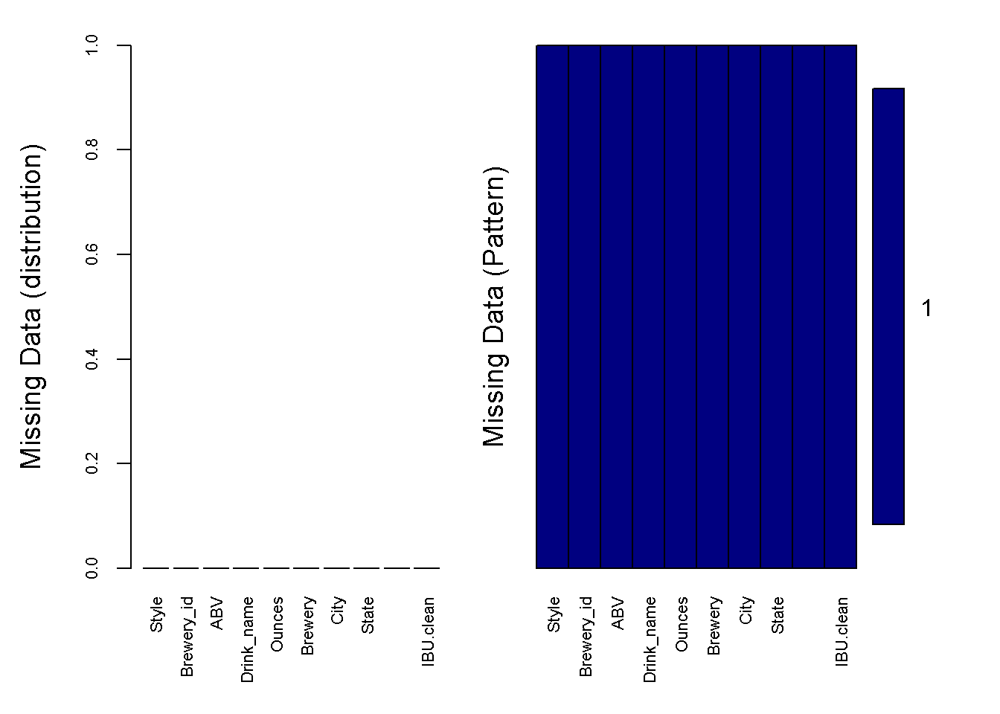
##
## Variables sorted by number of missings:
## Variable Count
## Style 0
## Brewery_id 0
## ABV 0
## Drink_name 0
## Ounces 0
## Brewery 0
## City 0
## State 0
## median_IBU_by_style 0
## IBU.clean 0## Style Brewery_id ABV Drink_name Ounces Brewery City State
## Length:2348 Min. : 1 Min. :0.02700 Length:2348 Min. : 8.40 Length:2348 Length:2348 CO : 258
## Class :character 1st Qu.: 92 1st Qu.:0.05000 Class :character 1st Qu.:12.00 Class :character Class :character CA : 181
## Mode :character Median :204 Median :0.05600 Mode :character Median :12.00 Mode :character Mode :character MI : 146
## Mean :231 Mean :0.05967 Mean :13.56 IN : 139
## 3rd Qu.:366 3rd Qu.:0.06700 3rd Qu.:16.00 TX : 129
## Max. :558 Max. :0.12800 Max. :32.00 OR : 115
## (Other):1380
## median_IBU_by_style IBU.clean
## Min. : 8.00 Min. : 3.57
## 1st Qu.:21.00 1st Qu.: 21.00
## Median :30.00 Median : 32.00
## Mean :40.03 Mean : 40.46
## 3rd Qu.:69.00 3rd Qu.: 60.00
## Max. :96.00 Max. :138.00
## We can see that there is a difference between states for median IBU and ABV. This is likely due to a variety of reasons such as local laws, climate, demographics, local diet, income per capita, etc. For example, West Virginia has the highest median IBU and New Hampshire has the lowest median IBU per state. Kentucky has the highest median ABV. Utah has the lowest ABV per state (state law mandates 4.0% for most beers)
## `summarise()` ungrouping output (override with `.groups` argument)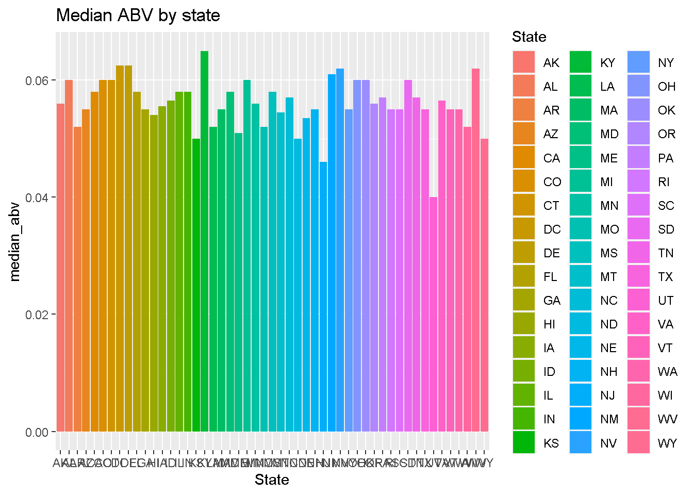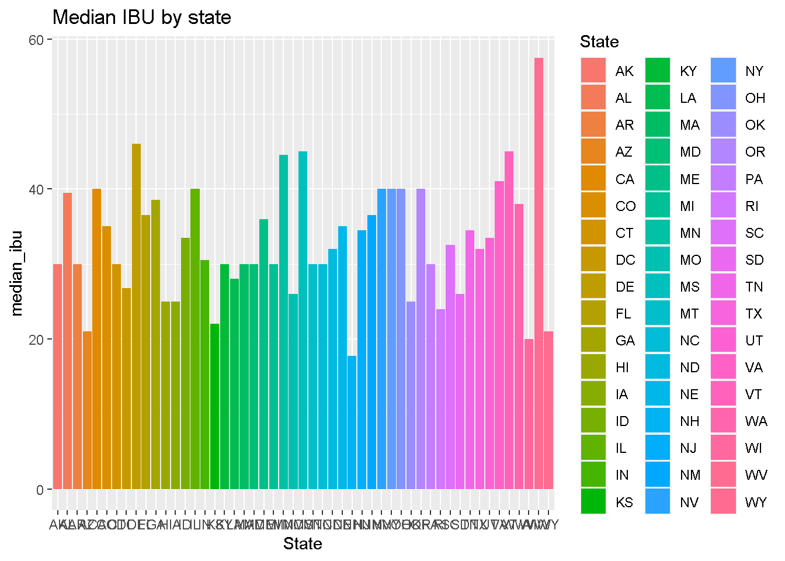
## [1] "Total Unique Breweries: "## [1] 558| Style | Brewery_id | ABV | Drink_name | Ounces | Brewery | City | State | median_IBU_by_style | IBU.clean |
|---|---|---|---|---|---|---|---|---|---|
| Quadrupel (Quad) | 52 | 0.128 | Lee Hill Series Vol. 5 - Belgian Style Quadrupel Ale | 19.2 | Upslope Brewing Company | Boulder | CO | 24 | 24 |
| English Barleywine | 2 | 0.125 | London Balling | 16.0 | Against the Grain Brewery | Louisville | KY | 60 | 80 |
| Russian Imperial Stout | 18 | 0.120 | Csar | 16.0 | Tin Man Brewing Company | Evansville | IN | 94 | 90 |
| Rye Beer | 52 | 0.104 | Lee Hill Series Vol. 4 - Manhattan Style Rye Ale | 19.2 | Upslope Brewing Company | Boulder | CO | 57 | 57 |
| Baltic Porter | 47 | 0.100 | 4Beans | 12.0 | Sixpoint Craft Ales | Brooklyn | NY | 52 | 52 |
| American Barleywine | 310 | 0.099 | Old Devil's Tooth | 12.0 | Sockeye Brewing Company | Boise | ID | 96 | 100 |
## [1] "Highest ABV State"## Style Brewery_id ABV Drink_name Ounces Brewery City State
## 1 Quadrupel (Quad) 52 0.128 Lee Hill Series Vol. 5 - Belgian Style Quadrupel Ale 19.2 Upslope Brewing Company Boulder CO
## median_IBU_by_style IBU.clean
## 1 24 24| Style | Brewery_id | ABV | Drink_name | Ounces | Brewery | City | State | median_IBU_by_style | IBU.clean |
|---|---|---|---|---|---|---|---|---|---|
| American Double / Imperial IPA | 375 | 0.082 | Bitter Bitch Imperial IPA | 12 | Astoria Brewing Company | Astoria | OR | 90.5 | 138 |
| American IPA | 345 | 0.059 | Troopers Alley IPA | 12 | Wolf Hills Brewing Company | Abingdon | VA | 69.0 | 135 |
| American Double / Imperial IPA | 231 | 0.090 | Dead-Eye DIPA | 16 | Cape Ann Brewing Company | Gloucester | MA | 90.5 | 130 |
| American Double / Imperial IPA | 100 | 0.089 | Bay of Bengal Double IPA (2014) | 12 | Christian Moerlein Brewing Company | Cincinnati | OH | 90.5 | 126 |
| American Double / Imperial IPA | 273 | 0.080 | Heady Topper | 16 | The Alchemist | Waterbury | VT | 90.5 | 120 |
| American Double / Imperial IPA | 62 | 0.097 | Abrasive Ale | 16 | Surly Brewing Company | Brooklyn Center | MN | 90.5 | 120 |
## [1] "Highest IBU State"## Style Brewery_id ABV Drink_name Ounces Brewery City State median_IBU_by_style
## 1 American Double / Imperial IPA 375 0.082 Bitter Bitch Imperial IPA 12 Astoria Brewing Company Astoria OR 90.5
## IBU.clean
## 1 138As can be seen IBU is right skewed. The distribution per state seems fairly similar. Most of the beer is located around the lower IBU which could indicate that more bitter beer is less popular and thus sold less. Similarly the distribution of ABV is right skewed as we would expect for values that can only be positive. It seems that most popular beers will have around 5% ABV so that is the peak we see in the middle. Minimum ABV is 0.027, the maximum ABV is 0.128. The minimum being 2.7 suggests no non-alcoholic beer is present in our dataset and that the lowest ABV is similar to a Raddler or a VERY weak session ale. The highest ABV is consistent with Barley wines, Imperial Stouts, or other High gravity beers. The inter-quartile range for the mean 50% of beers ranges from .050 to .0670 suggesting most craft beers have a fairly predictable ABV.
| Style | Brewery_id | ABV | Drink_name | Ounces | Brewery | City | State | median_IBU_by_style | IBU.clean | |
|---|---|---|---|---|---|---|---|---|---|---|
| Length:2348 | Min. : 1 | Min. :0.02700 | Length:2348 | Min. : 8.40 | Length:2348 | Length:2348 | CO : 258 | Min. : 8.00 | Min. : 3.57 | |
| Class :character | 1st Qu.: 92 | 1st Qu.:0.05000 | Class :character | 1st Qu.:12.00 | Class :character | Class :character | CA : 181 | 1st Qu.:21.00 | 1st Qu.: 21.00 | |
| Mode :character | Median :204 | Median :0.05600 | Mode :character | Median :12.00 | Mode :character | Mode :character | MI : 146 | Median :30.00 | Median : 32.00 | |
| NA | Mean :231 | Mean :0.05967 | NA | Mean :13.56 | NA | NA | IN : 139 | Mean :40.03 | Mean : 40.46 | |
| NA | 3rd Qu.:366 | 3rd Qu.:0.06700 | NA | 3rd Qu.:16.00 | NA | NA | TX : 129 | 3rd Qu.:69.00 | 3rd Qu.: 60.00 | |
| NA | Max. :558 | Max. :0.12800 | NA | Max. :32.00 | NA | NA | OR : 115 | Max. :96.00 | Max. :138.00 | |
| NA | NA | NA | NA | NA | NA | NA | (Other):1380 | NA | NA |
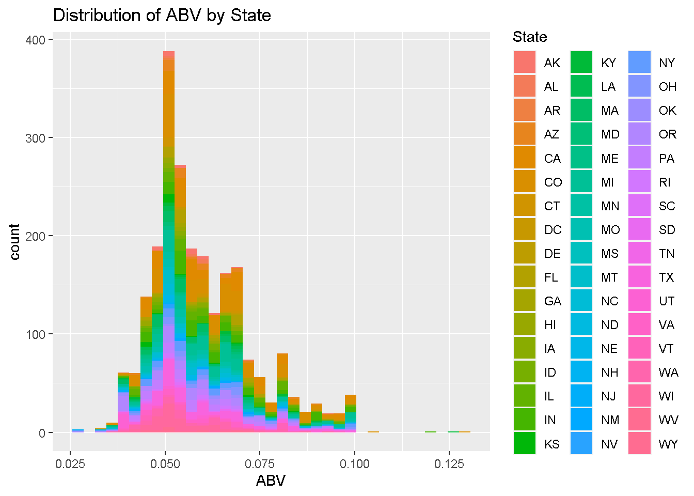
## `stat_bin()` using `bins = 30`. Pick better value with `binwidth`.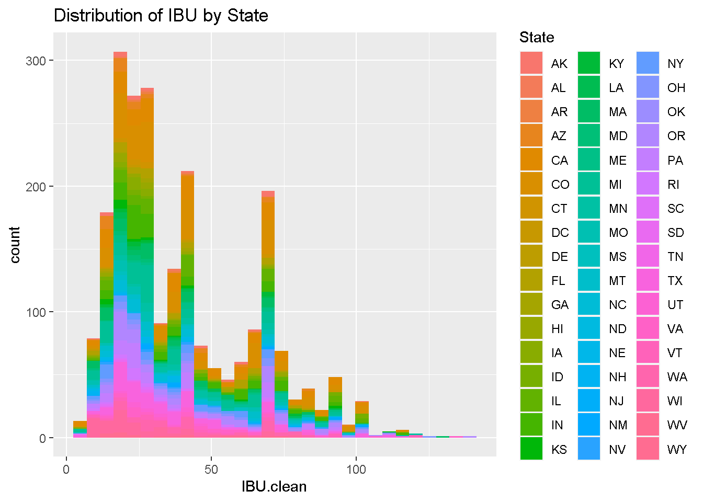
These plots suggest visually that there is indeed a linear relationship between IBU and ABV and that there are some outliers at the very high and low ABV values. 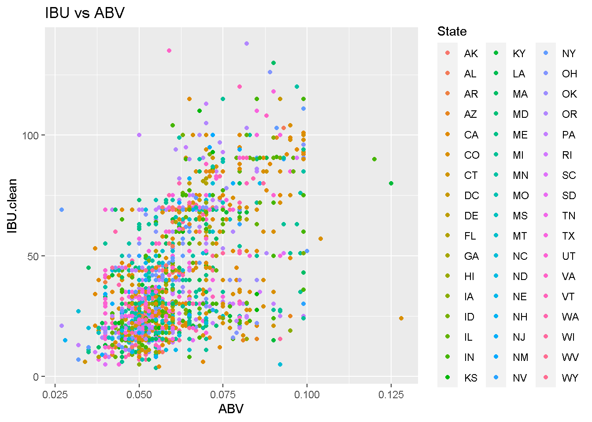
## `geom_smooth()` using formula 'y ~ x'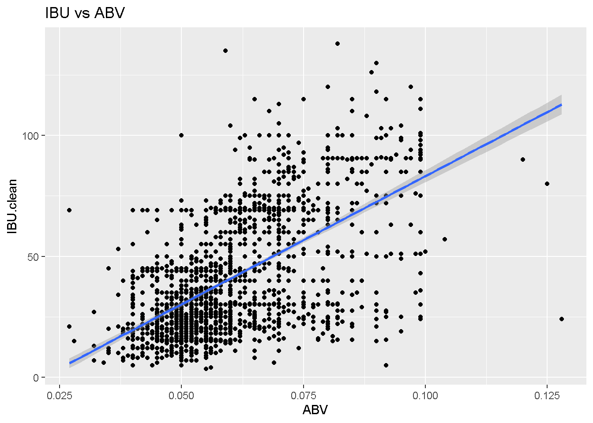
Note: Assumptions are met for linear regression, we can see that there are many significant interaction terms between ABV and State and that ABV is significant with respect to IBU. Our model includes main effects of State and ABV as well as interactions for State with ABV. For many states, the interaction terms and main effects were found to be significant. For example, the interaction term between the state Migichigan and ABV was found to have a p-value of 0.000211. Significant main effects on IBU from state were also noticed across many states (example ABV P=8.38e-06). In conclusion 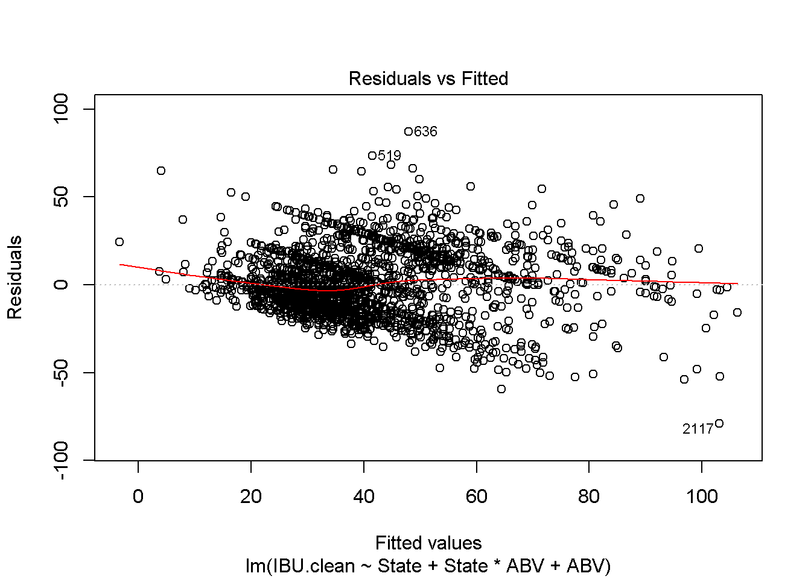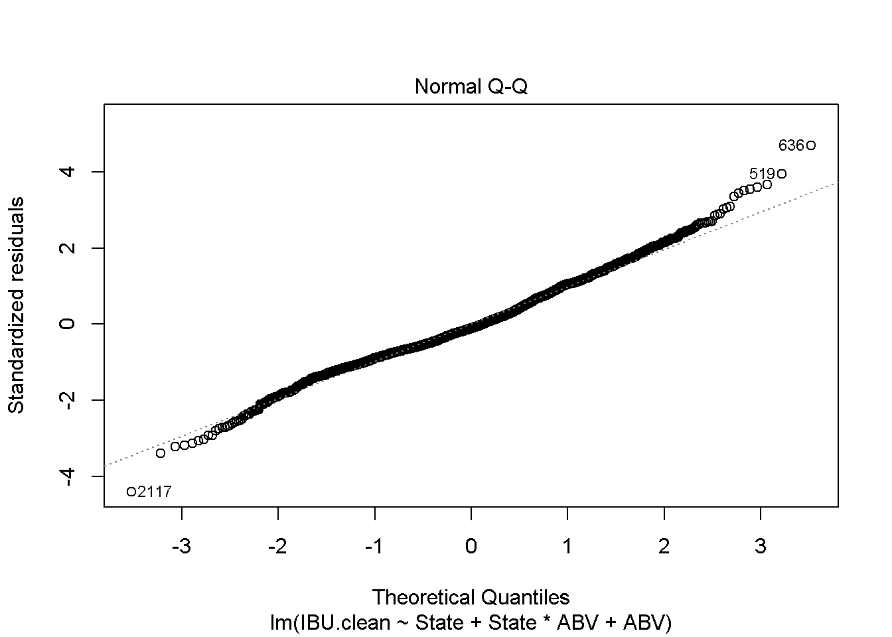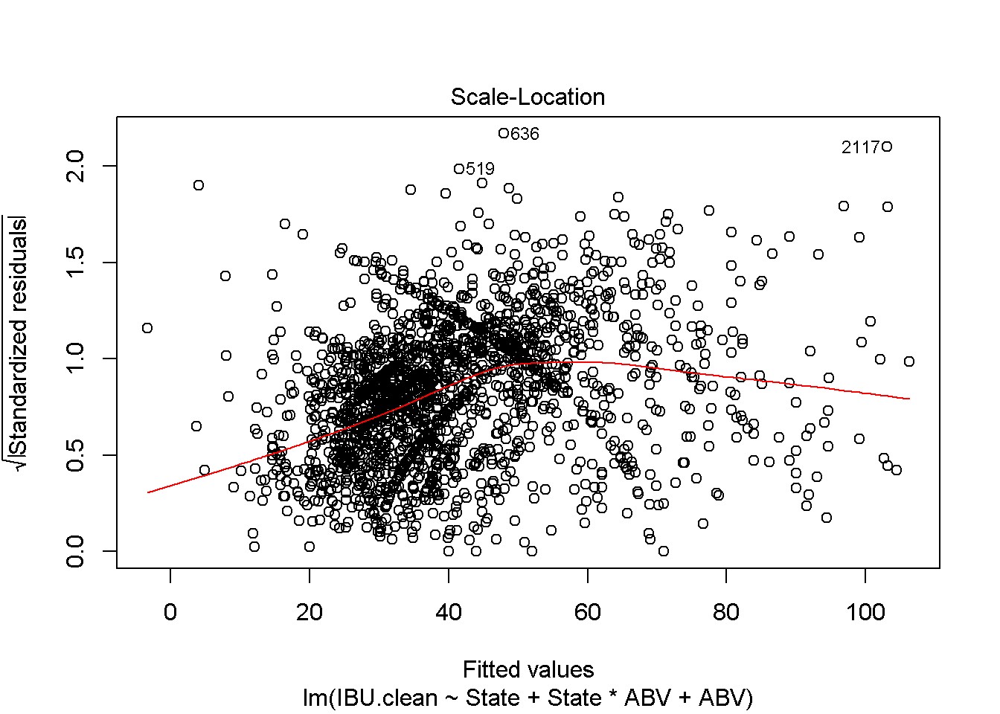
## Warning in sqrt(crit * p * (1 - hh)/hh): NaNs produced
## Warning in sqrt(crit * p * (1 - hh)/hh): NaNs produced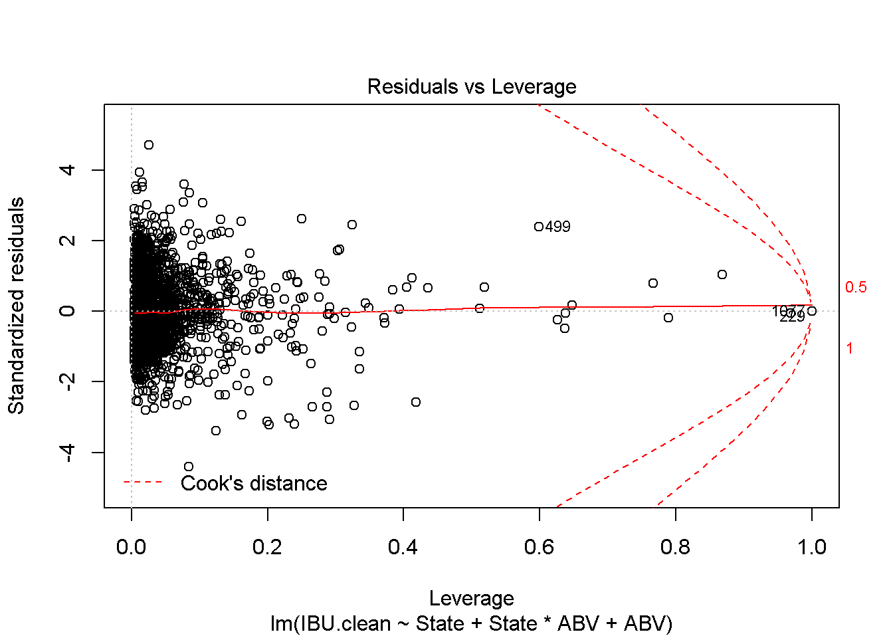
## 2.5 % 97.5 %
## (Intercept) -2.029943e+02 -5.557743e+01
## StateAL -3.171919e+01 1.610959e+02
## StateAR 1.873105e+01 3.022028e+02
## StateAZ 4.223290e+01 1.995165e+02
## StateCA 2.426679e+01 1.735989e+02
## StateCO 3.969322e+01 1.885393e+02
## StateCT 2.709379e+01 1.850218e+02
## StateDC -3.592496e+01 1.596376e+02
## StateDE -4.996493e+00 4.555682e+02
## StateFL -8.545280e+00 1.503379e+02
## StateGA -1.517081e+01 1.858964e+02
## StateHI 9.646861e+00 1.784723e+02
## StateIA 3.499440e+01 1.973795e+02
## StateID 1.044196e+01 1.676403e+02
## StateIL 1.045292e+01 1.619778e+02
## StateIN 4.723884e+01 1.971809e+02
## StateKS 1.470119e+01 1.787877e+02
## StateKY 4.877115e+01 2.065952e+02
## StateLA 3.073658e+00 1.705897e+02
## StateMA 1.170816e+01 1.650841e+02
## StateMD 3.120150e+01 2.018471e+02
## StateME 1.643328e+01 1.741833e+02
## StateMI 6.025551e+01 2.102381e+02
## StateMN 2.235158e+01 1.760193e+02
## StateMO -5.508943e+00 1.565254e+02
## StateMS -5.005935e+00 1.768878e+02
## StateMT 2.745614e-02 1.707954e+02
## StateNC 4.231389e+01 1.961367e+02
## StateND -9.828384e+01 1.894470e+02
## StateNE 2.539617e+01 1.882393e+02
## StateNH 8.715583e+00 2.110638e+02
## StateNJ 1.506322e+01 1.810460e+02
## StateNM -6.668006e+01 1.304972e+02
## StateNV 4.021690e+01 2.140915e+02
## StateNY 2.442976e+01 1.761810e+02
## StateOH 2.997580e+01 1.861851e+02
## StateOK 1.152842e+01 1.794636e+02
## StateOR 5.000986e+00 1.560456e+02
## StatePA 6.221629e+01 2.136222e+02
## StateRI 3.662376e+01 1.986142e+02
## StateSC 1.389958e+01 1.786749e+02
## StateSD 9.196488e+00 2.708410e+02
## StateTN -8.927856e+01 2.256904e+02
## StateTX 9.759844e+00 1.602073e+02
## StateUT 5.117993e+01 2.063815e+02
## StateVA 1.352737e+00 1.622822e+02
## StateVT 2.353106e+00 1.616770e+02
## StateWA 4.380150e+01 1.994758e+02
## StateWI 2.488623e+01 1.802204e+02
## StateWV -3.122755e+02 3.510472e+02
## StateWY -3.231905e+01 1.599556e+02
## ABV 1.683411e+03 4.319674e+03
## StateAL:ABV -2.828290e+03 4.622201e+02
## StateAR:ABV -5.642426e+03 -3.291640e+02
## StateAZ:ABV -3.694724e+03 -9.113125e+02
## StateCA:ABV -3.117509e+03 -4.543538e+02
## StateCO:ABV -3.404959e+03 -7.494499e+02
## StateCT:ABV -3.343957e+03 -5.588777e+02
## StateDC:ABV -2.957355e+03 3.025984e+02
## StateDE:ABV -7.509553e+03 -9.353292e+01
## StateFL:ABV -2.742573e+03 6.806532e+01
## StateGA:ABV -3.315434e+03 2.519687e+02
## StateHI:ABV -3.293903e+03 -2.906260e+02
## StateIA:ABV -3.662407e+03 -7.972994e+02
## StateID:ABV -2.940741e+03 -1.641119e+02
## StateIL:ABV -2.946349e+03 -2.530816e+02
## StateIN:ABV -3.558914e+03 -8.890956e+02
## StateKS:ABV -3.250293e+03 -3.303854e+02
## StateKY:ABV -3.739902e+03 -9.751429e+02
## StateLA:ABV -3.088269e+03 -1.031970e+02
## StateMA:ABV -2.978856e+03 -2.400355e+02
## StateMD:ABV -3.607993e+03 -6.088146e+02
## StateME:ABV -3.103455e+03 -3.046362e+02
## StateMI:ABV -3.863372e+03 -1.192372e+03
## StateMN:ABV -3.029844e+03 -3.025354e+02
## StateMO:ABV -2.811211e+03 9.048378e+01
## StateMS:ABV -3.064616e+03 1.102774e+02
## StateMT:ABV -3.090981e+03 -4.971947e+01
## StateNC:ABV -3.559235e+03 -8.244883e+02
## StateND:ABV -3.315619e+03 1.906518e+03
## StateNE:ABV -3.409103e+03 -5.251026e+02
## StateNH:ABV -3.875002e+03 -1.726223e+02
## StateNJ:ABV -3.107711e+03 -1.901473e+02
## StateNM:ABV -2.237922e+03 1.146503e+03
## StateNV:ABV -3.781304e+03 -8.292089e+02
## StateNY:ABV -3.131588e+03 -4.259876e+02
## StateOH:ABV -3.336667e+03 -5.801752e+02
## StateOK:ABV -3.327548e+03 -3.781808e+02
## StateOR:ABV -2.668915e+03 2.787855e+01
## StatePA:ABV -3.831445e+03 -1.136083e+03
## StateRI:ABV -3.684933e+03 -8.084058e+02
## StateSC:ABV -3.272199e+03 -3.885799e+02
## StateSD:ABV -4.912777e+03 -4.379245e+02
## StateTN:ABV -4.008628e+03 1.657986e+03
## StateTX:ABV -2.939022e+03 -2.571151e+02
## StateUT:ABV -3.625949e+03 -8.424689e+02
## StateVA:ABV -2.815656e+03 4.590502e+01
## StateVT:ABV -2.803556e+03 4.054335e-02
## StateWA:ABV -3.500037e+03 -7.273079e+02
## StateWI:ABV -3.394402e+03 -6.088908e+02
## StateWV:ABV -5.664767e+03 5.061681e+03
## StateWY:ABV -2.961487e+03 4.869884e+02##
## Call:
## lm(formula = IBU.clean ~ State + State * ABV + ABV, data = bdat.imputed.IBU.clean)
##
## Residuals:
## Min 1Q Median 3Q Max
## -79.146 -12.212 -1.991 12.028 87.085
##
## Coefficients:
## Estimate Std. Error t value Pr(>|t|)
## (Intercept) -129.29 37.59 -3.440 0.000593 ***
## StateAL 64.69 49.16 1.316 0.188368
## StateAR 160.47 72.28 2.220 0.026506 *
## StateAZ 120.87 40.10 3.014 0.002606 **
## StateCA 98.93 38.08 2.598 0.009428 **
## StateCO 114.12 37.95 3.007 0.002668 **
## StateCT 106.06 40.27 2.634 0.008500 **
## StateDC 61.86 49.86 1.241 0.214906
## StateDE 225.29 117.43 1.918 0.055178 .
## StateFL 70.90 40.51 1.750 0.080241 .
## StateGA 85.36 51.27 1.665 0.096033 .
## StateHI 94.06 43.05 2.185 0.028982 *
## StateIA 116.19 41.40 2.806 0.005056 **
## StateID 89.04 40.08 2.222 0.026413 *
## StateIL 86.22 38.63 2.232 0.025741 *
## StateIN 122.21 38.23 3.197 0.001410 **
## StateKS 96.74 41.84 2.312 0.020845 *
## StateKY 127.68 40.24 3.173 0.001529 **
## StateLA 86.83 42.71 2.033 0.042172 *
## StateMA 88.40 39.11 2.260 0.023891 *
## StateMD 116.52 43.51 2.678 0.007457 **
## StateME 95.31 40.22 2.370 0.017892 *
## StateMI 135.25 38.24 3.537 0.000413 ***
## StateMN 99.19 39.18 2.531 0.011425 *
## StateMO 75.51 41.31 1.828 0.067731 .
## StateMS 85.94 46.38 1.853 0.064002 .
## StateMT 85.41 43.54 1.962 0.049926 *
## StateNC 119.23 39.22 3.040 0.002394 **
## StateND 45.58 73.36 0.621 0.534452
## StateNE 106.82 41.52 2.573 0.010155 *
## StateNH 109.89 51.59 2.130 0.033284 *
## StateNJ 98.05 42.32 2.317 0.020596 *
## StateNM 31.91 50.27 0.635 0.525694
## StateNV 127.15 44.33 2.868 0.004167 **
## StateNY 100.31 38.69 2.592 0.009592 **
## StateOH 108.08 39.83 2.714 0.006706 **
## StateOK 95.50 42.82 2.230 0.025829 *
## StateOR 80.52 38.51 2.091 0.036651 *
## StatePA 137.92 38.60 3.573 0.000361 ***
## StateRI 117.62 41.30 2.848 0.004443 **
## StateSC 96.29 42.01 2.292 0.022006 *
## StateSD 140.02 66.71 2.099 0.035939 *
## StateTN 68.21 80.31 0.849 0.395799
## StateTX 84.98 38.36 2.215 0.026829 *
## StateUT 128.78 39.57 3.254 0.001153 **
## StateVA 81.82 41.03 1.994 0.046274 *
## StateVT 82.02 40.62 2.019 0.043611 *
## StateWA 121.64 39.69 3.065 0.002206 **
## StateWI 102.55 39.61 2.589 0.009677 **
## StateWV 19.39 169.13 0.115 0.908754
## StateWY 63.82 49.02 1.302 0.193128
## ABV 3001.54 672.17 4.465 8.38e-06 ***
## StateAL:ABV -1183.04 838.98 -1.410 0.158652
## StateAR:ABV -2985.79 1354.72 -2.204 0.027626 *
## StateAZ:ABV -2303.02 709.68 -3.245 0.001191 **
## StateCA:ABV -1785.93 679.02 -2.630 0.008593 **
## StateCO:ABV -2077.20 677.07 -3.068 0.002181 **
## StateCT:ABV -1951.42 710.11 -2.748 0.006043 **
## StateDC:ABV -1327.38 831.19 -1.597 0.110414
## StateDE:ABV -3801.54 1890.86 -2.010 0.044499 *
## StateFL:ABV -1337.25 716.63 -1.866 0.062166 .
## StateGA:ABV -1531.73 909.58 -1.684 0.092320 .
## StateHI:ABV -1792.26 765.74 -2.341 0.019342 *
## StateIA:ABV -2229.85 730.51 -3.052 0.002296 **
## StateID:ABV -1552.43 707.95 -2.193 0.028422 *
## StateIL:ABV -1599.72 686.70 -2.330 0.019917 *
## StateIN:ABV -2224.00 680.72 -3.267 0.001103 **
## StateKS:ABV -1790.34 744.49 -2.405 0.016262 *
## StateKY:ABV -2357.52 704.93 -3.344 0.000838 ***
## StateLA:ABV -1595.73 761.10 -2.097 0.036140 *
## StateMA:ABV -1609.45 698.31 -2.305 0.021271 *
## StateMD:ABV -2108.40 764.70 -2.757 0.005878 **
## StateME:ABV -1704.05 713.61 -2.388 0.017027 *
## StateMI:ABV -2527.87 681.02 -3.712 0.000211 ***
## StateMN:ABV -1666.19 695.38 -2.396 0.016653 *
## StateMO:ABV -1360.36 739.84 -1.839 0.066088 .
## StateMS:ABV -1477.17 809.50 -1.825 0.068165 .
## StateMT:ABV -1570.35 775.43 -2.025 0.042971 *
## StateNC:ABV -2191.86 697.28 -3.143 0.001691 **
## StateND:ABV -704.55 1331.48 -0.529 0.596756
## StateNE:ABV -1967.10 735.33 -2.675 0.007524 **
## StateNH:ABV -2023.81 943.99 -2.144 0.032149 *
## StateNJ:ABV -1648.93 743.89 -2.217 0.026748 *
## StateNM:ABV -545.71 862.92 -0.632 0.527193
## StateNV:ABV -2305.26 752.69 -3.063 0.002220 **
## StateNY:ABV -1778.79 689.84 -2.579 0.009985 **
## StateOH:ABV -1958.42 702.82 -2.787 0.005373 **
## StateOK:ABV -1852.86 752.00 -2.464 0.013817 *
## StateOR:ABV -1320.52 687.60 -1.920 0.054924 .
## StatePA:ABV -2483.76 687.23 -3.614 0.000308 ***
## StateRI:ABV -2246.67 733.43 -3.063 0.002215 **
## StateSC:ABV -1830.39 735.23 -2.490 0.012863 *
## StateSD:ABV -2675.35 1140.95 -2.345 0.019122 *
## StateTN:ABV -1175.32 1444.81 -0.813 0.416031
## StateTX:ABV -1598.07 683.80 -2.337 0.019525 *
## StateUT:ABV -2234.21 709.70 -3.148 0.001665 **
## StateVA:ABV -1384.88 729.61 -1.898 0.057811 .
## StateVT:ABV -1401.76 714.83 -1.961 0.050007 .
## StateWA:ABV -2113.67 706.96 -2.990 0.002822 **
## StateWI:ABV -2001.65 710.22 -2.818 0.004869 **
## StateWV:ABV -301.54 2734.91 -0.110 0.912216
## StateWY:ABV -1237.25 879.26 -1.407 0.159519
## ---
## Signif. codes: 0 '***' 0.001 '**' 0.01 '*' 0.05 '.' 0.1 ' ' 1
##
## Residual standard error: 18.75 on 2246 degrees of freedom
## Multiple R-squared: 0.4258, Adjusted R-squared: 0.4
## F-statistic: 16.49 on 101 and 2246 DF, p-value: < 2.2e-16To investigate the difference between IBU and ABV for IPA's vs OtherAles we first perform some nominal data cleanup and visualize IBU vs ABV for IPA's vs otherAles. We then use KNN to classify style, either IPA or otherAle, to highlight that there is a significant difference between the relationship of IBU and ABV for IPA's and otherAles
Ale. Then bucket anything with IPA or India Pale Ale as IPA and all other beers with the word Ale in their style as OtherAle.IPA's and otherAlesIPA's and otherAles for IPA's and OtherALesNote: American Pale Ale is VERY similar to IPA but we call it "other" ale
## Abbey Single Ale Altbier American Adjunct Lager American Amber / Red Ale
## 2 13 18 132
## American Amber / Red Lager American Barleywine American Black Ale American Blonde Ale
## 28 3 36 108
## American Brown Ale American Dark Wheat Ale American Double / Imperial IPA American Double / Imperial Pilsner
## 70 7 105 2
## American Double / Imperial Stout American India Pale Lager American IPA American Pale Ale (APA)
## 9 3 423 244
## American Pale Lager American Pale Wheat Ale American Pilsner American Porter
## 38 96 25 67
## American Stout American Strong Ale American White IPA American Wild Ale
## 39 14 11 6
## Baltic Porter Belgian Dark Ale Belgian IPA Belgian Pale Ale
## 6 11 18 24
## Belgian Strong Dark Ale Belgian Strong Pale Ale Berliner Weissbier Bière de Garde
## 6 7 11 7
## Bock California Common / Steam Beer Chile Beer Cream Ale
## 7 6 3 29
## Czech Pilsener Doppelbock Dortmunder / Export Lager Dubbel
## 28 7 6 5
## Dunkelweizen English Barleywine English Bitter English Brown Ale
## 4 3 3 18
## English Dark Mild Ale English India Pale Ale (IPA) English Pale Ale English Pale Mild Ale
## 6 13 12 3
## English Stout English Strong Ale Euro Dark Lager Euro Pale Lager
## 2 4 5 2
## Extra Special / Strong Bitter (ESB) Flanders Oud Bruin Foreign / Export Stout Fruit / Vegetable Beer
## 20 1 6 49
## German Pilsener Gose Grisette Hefeweizen
## 36 10 1 40
## Herbed / Spiced Beer Irish Dry Stout Irish Red Ale Keller Bier / Zwickel Bier
## 9 5 12 3
## Kölsch Lager Light Lager Maibock / Helles Bock
## 42 1 12 5
## Märzen / Oktoberfest Milk / Sweet Stout Munich Dunkel Lager Munich Helles Lager
## 30 10 4 20
## Oatmeal Stout Old Ale Other Pumpkin Ale
## 18 2 1 23
## Quadrupel (Quad) Radler Roggenbier Russian Imperial Stout
## 4 3 2 11
## Rye Beer Saison / Farmhouse Ale Schwarzbier Scotch Ale / Wee Heavy
## 18 52 9 15
## Scottish-Style Amber Ale Scottish Ale Smoked Beer Tripel
## 1 19 1 11
## Vienna Lager Wheat Ale Winter Warmer Witbier
## 20 1 15 51## Style Brewery_id ABV Drink_name Ounces Brewery City State median_IBU_by_style IBU.clean
## 1 OtherAle 58 0.049 Abbey's Single (2015- ) 12 Destihl Brewery Bloomington IL 22 22
## 2 OtherAle 58 0.049 Abbey's Single Ale (Current) 12 Destihl Brewery Bloomington IL 22 22
## 3 OtherAle 361 0.061 Hot Rod Red 12 Aviator Brewing Company Fuquay-Varina NC 30 41
## 4 OtherAle 553 0.056 Mickey Finn's Amber Ale 12 Mickey Finn's Brewery Libertyville IL 30 30
## 5 OtherAle 102 0.052 Hurricane Amber Ale 12 Coastal Extreme Brewing Company Newport RI 30 24
## 6 OtherAle 83 0.052 Fat Tire Amber Ale (2011) 12 New Belgium Brewing Company Fort Collins CO 30 18## `stat_bin()` using `bins = 30`. Pick better value with `binwidth`.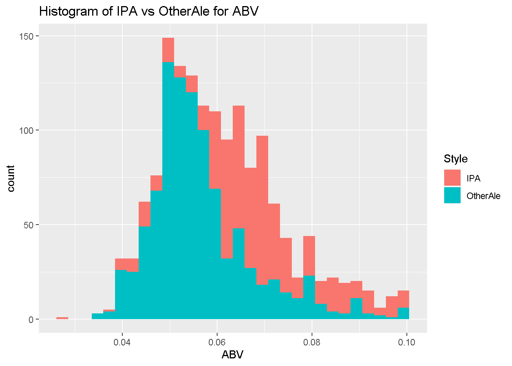
## `geom_smooth()` using formula 'y ~ x'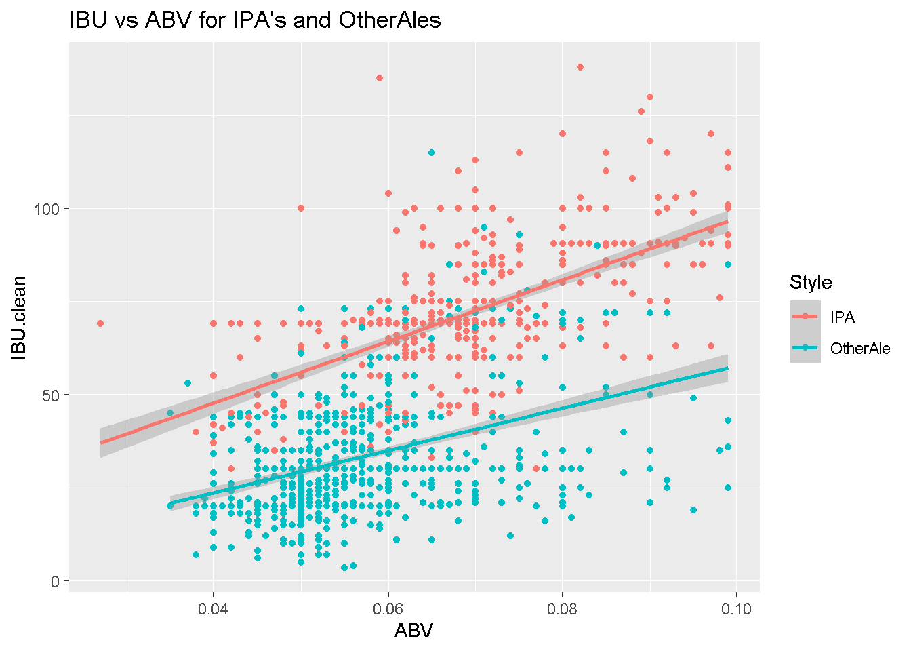
## Length Class Mode
## 2348 character characterSplit the data into 85% train and 15% test. Only train our algorithms on training data with crossvalidation. Use test split only for accuracy and prediction metric calculation.
IPA's vs Other Ales## Confusion Matrix and Statistics
##
## classifications
## IPA OtherAle
## IPA 66 8
## OtherAle 16 140
##
## Accuracy : 0.8957
## 95% CI : (0.8487, 0.932)
## No Information Rate : 0.6435
## P-Value [Acc > NIR] : <2e-16
##
## Kappa : 0.7675
##
## Mcnemar's Test P-Value : 0.153
##
## Sensitivity : 0.8049
## Specificity : 0.9459
## Pos Pred Value : 0.8919
## Neg Pred Value : 0.8974
## Prevalence : 0.3565
## Detection Rate : 0.2870
## Detection Prevalence : 0.3217
## Balanced Accuracy : 0.8754
##
## 'Positive' Class : IPA
## IPA's vs Other AlesUse least squared multiple linear regression to highlight specific relationships between IBU and ABV for style IPA and style otherAle. - NOTE: make the unit increase in interpretation be in terms of .01 unit increase in ABV 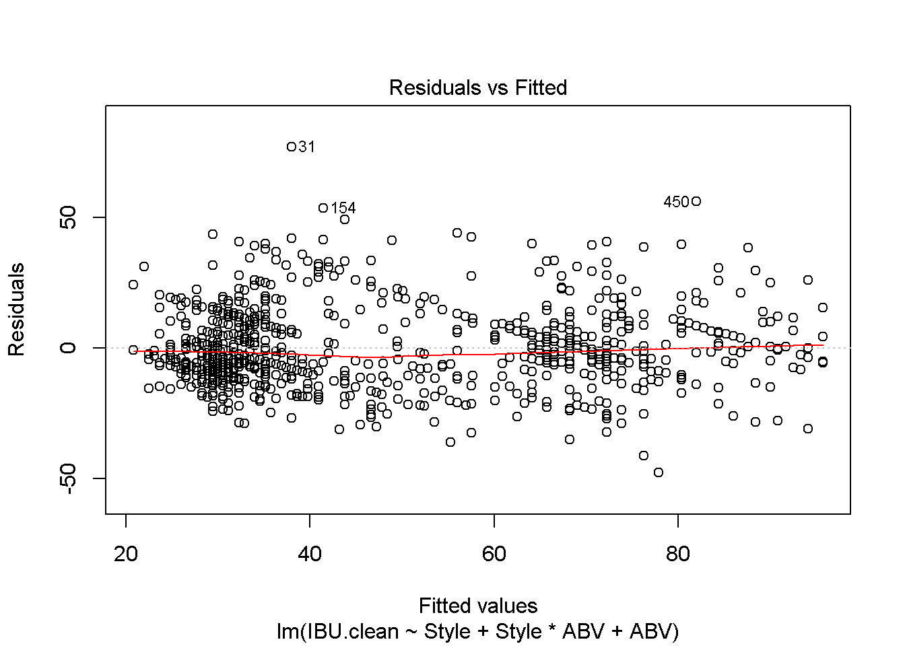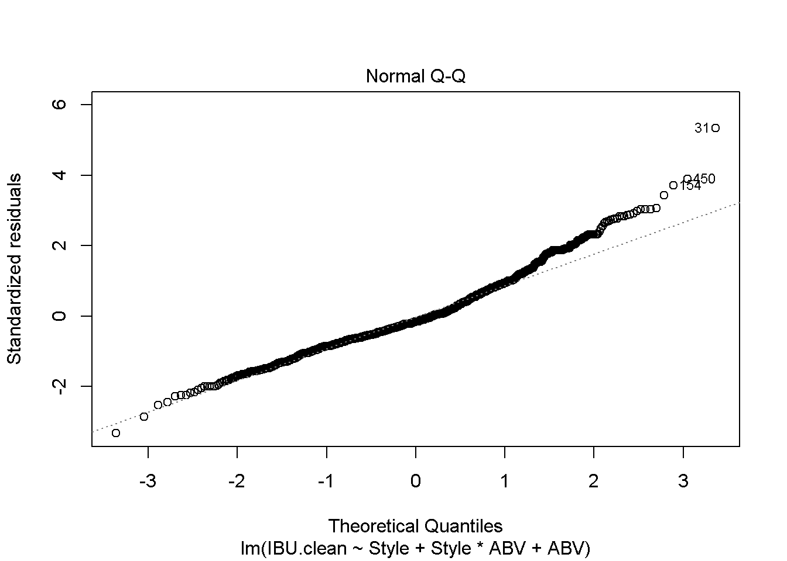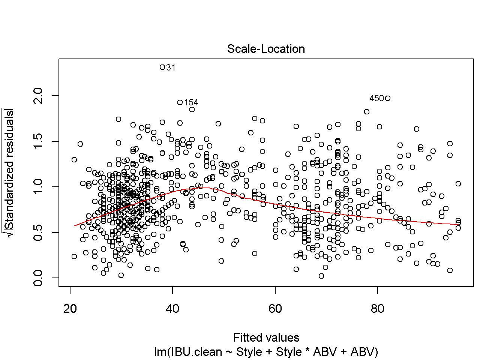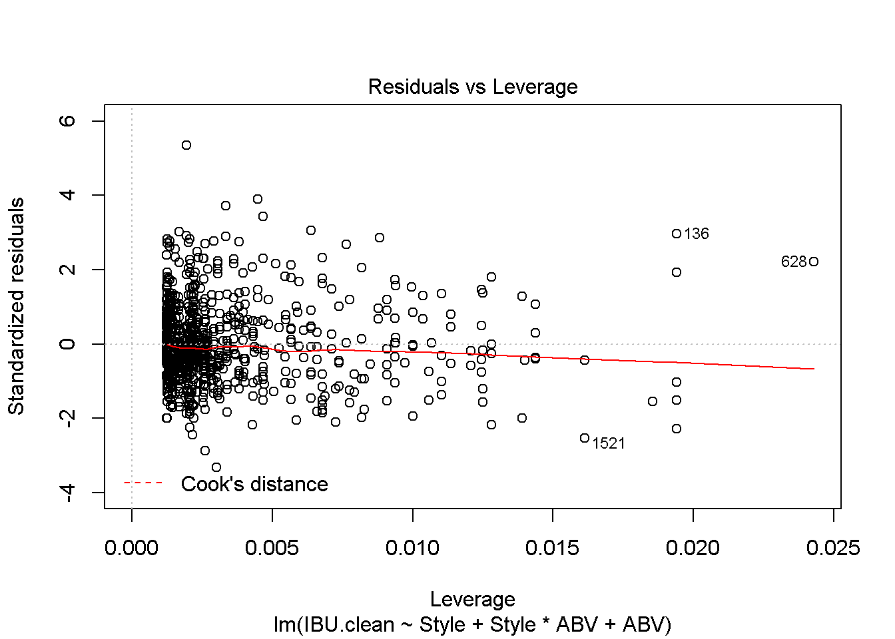
## 2.5 % 97.5 %
## (Intercept) 8.43918 22.634170
## StyleOtherAle -23.62164 -6.044308
## ABV 707.65116 912.224759
## StyleOtherAle:ABV -371.92932 -99.601412##
## Call:
## lm(formula = IBU.clean ~ Style + Style * ABV + ABV, data = bdat.IPA.Vs.Ales.train)
##
## Residuals:
## Min 1Q Median 3Q Max
## -47.902 -9.135 -2.283 8.278 76.975
##
## Coefficients:
## Estimate Std. Error t value Pr(>|t|)
## (Intercept) 15.537 3.618 4.294 1.88e-05 ***
## StyleOtherAle -14.833 4.480 -3.311 0.000955 ***
## ABV 809.938 52.139 15.534 < 2e-16 ***
## StyleOtherAle:ABV -235.765 69.408 -3.397 0.000702 ***
## ---
## Signif. codes: 0 '***' 0.001 '**' 0.01 '*' 0.05 '.' 0.1 ' ' 1
##
## Residual standard error: 14.42 on 1296 degrees of freedom
## Multiple R-squared: 0.6575, Adjusted R-squared: 0.6567
## F-statistic: 829.3 on 3 and 1296 DF, p-value: < 2.2e-16Here we use LDA and KNN to assess the relationship between IBU and Style as well as ABV and style.
It is clear that there is a significant relationship between IBU and ABV and that the relationship varies for IPA's and for other Ales. We were able to predict the style of Ale (either IPA or other Ales) with an average Accuracy of 90% (P-value < 2e-16). Further, we can be 95% confident that the true accuracy for our model is between [0.8537, 0.9355]. On average, holding all other variables constant, we predict that when an ale is an IPA, it has a 2.373 increase in IBU per .01 increase in relative ABV, when compared to Other Ales. That is to say, IPA's generally have a higher bitterness for a given ABV than other ales and the ratio of IBU to ABV is generally higher for IPA's. We are 95% confident that this 'IPA' effect is between [1.01203617 3.73372852] per .01 increase in ABV. This 'IPA' effect applies to all craft beers sampled in the study, as well as all craft beers in the USA for which the beers sampled int the study are a good representation. Reasons for this 'IPA' effect could be simply that IPA's, on average, use a higher ratio of hops in the brewing process and will generally have higher bitterness for the same ABV when compared to other Ales.
That said, it can be noted that IPA's generally have a higher ABV (IBU not fixed). The skew of IPA's toward higher ABV could also be due to the fact beer drinkers generally drink fewer IPA's and are willing to spend more money on them. As such, to achieve the same 'buzz' the discerning IPA drinker will gravitate towards higher IBU AND Higher ABV.
To show that there is a relationship between State and Ounces for all Ales, specifically 12 vs 16 ounces, we perform a brief analysis of Ounces vs. State. What we are interested in here is whether or not a State like California or Michigan differ in their preference for 12 vs 16 ounce beers.
12 or 16 ounces in volume.12 vs 16 ounce Ales for each state.## Warning in preProcess.default(thresh = 0.95, k = 5, freqCut = 19, uniqueCut = 10, : These variables have zero variances: StateAR, StateWV
## Warning in preProcess.default(thresh = 0.95, k = 5, freqCut = 19, uniqueCut = 10, : These variables have zero variances: StateAR, StateWV
## Warning in preProcess.default(thresh = 0.95, k = 5, freqCut = 19, uniqueCut = 10, : These variables have zero variances: StateAR, StateWV
## Warning in preProcess.default(thresh = 0.95, k = 5, freqCut = 19, uniqueCut = 10, : These variables have zero variances: StateAR, StateWV
## Warning in preProcess.default(thresh = 0.95, k = 5, freqCut = 19, uniqueCut = 10, : These variables have zero variances: StateAR, StateWV
## Warning in preProcess.default(thresh = 0.95, k = 5, freqCut = 19, uniqueCut = 10, : These variables have zero variances: StateAR, StateWV
## Warning in preProcess.default(thresh = 0.95, k = 5, freqCut = 19, uniqueCut = 10, : These variables have zero variances: StateAR, StateWV
## Warning in preProcess.default(thresh = 0.95, k = 5, freqCut = 19, uniqueCut = 10, : These variables have zero variances: StateAR, StateWV
## Warning in preProcess.default(thresh = 0.95, k = 5, freqCut = 19, uniqueCut = 10, : These variables have zero variances: StateAR, StateWV
## Warning in preProcess.default(thresh = 0.95, k = 5, freqCut = 19, uniqueCut = 10, : These variables have zero variances: StateAR, StateWV## Confusion Matrix and Statistics
##
## classifications
## 12 16
## 12 127 13
## 16 51 36
##
## Accuracy : 0.7181
## 95% CI : (0.6547, 0.7756)
## No Information Rate : 0.7841
## P-Value [Acc > NIR] : 0.9925
##
## Kappa : 0.3499
##
## Mcnemar's Test P-Value : 3.746e-06
##
## Sensitivity : 0.7135
## Specificity : 0.7347
## Pos Pred Value : 0.9071
## Neg Pred Value : 0.4138
## Prevalence : 0.7841
## Detection Rate : 0.5595
## Detection Prevalence : 0.6167
## Balanced Accuracy : 0.7241
##
## 'Positive' Class : 12
## There is a significant relationship between Ounces and State for Ales that are either 12 vs 16 ounces. We were able to predict ounces by state (for ales) with an accuracy of 71.4% which is significantly better than random chance (50% accuracy). This suggests that when considering what size a beer should be sold in, it could be important to consider what state that beer is going to be brewed in. This helps align sales with the laws and preferences of that state. For example, Indiana has a high prevalence of 16 ounce ales, whereas Colorado or Texas both lean towards 12 ounce ales. It would be preferable to brew and sell 16 ounce beers in states like Indiana (or other states that have more 16 ounce ales) and 12 ounce beers in Colorado (or other states that have more 12 ounce ales). The reason for this association may be due to a variety of reasons including income, weather, local diet, and social norms for beer drinkers.
There are several note-worthy relationships in our craft beer dataset. For example, median IBU as well as median ABV per state vary by state for craft beers. When targeting sales of particular states' craft beer, it would be wise to consider the median IBU and median ABV for the current craft beers in that state.
Further, it is clear that there is a significant relationship between IBU and ABV and that the relationship varies for IPA's and for other Ales. We were able to predict the style of Ale (either IPA or other Ales) with an average Accuracy of 90% (P-value < 2e-16). Further, we can be 95% confident that the true accuracy for our model is between [0.8537, 0.9355]. On average, holding all other variables constant, we predict that when an ale is an IPA, it has a 2.373 increase in IBU per .01 increase in relative ABV, when compared to Other Ales. That is to say, IPA's generally have a higher bitterness for a given ABV than other ales and the ratio of IBU to ABV is generally higher for IPA's. We are 95% confident that this 'IPA' effect is between [1.01203617 3.73372852] per .01 increase in ABV. This 'IPA' effect applies to all craft beers sampled in the study, as well as all craft beers in the USA for which the beers sampled in the study are a good representation. Reasons for this 'IPA' effect could be simply that IPA's, on average, use a higher ratio of hops in the brewing process and will generally have higher bitterness for the same ABV when compared to other Ales.
That said, it can be noted that IPA's generally have a higher ABV (IBU not fixed). The skew of IPA's toward higher ABV could also be due to the fact beer drinkers generally drink fewer IPA's and are willing to spend more money on them. As such, to achieve the same 'buzz' the discerning IPA drinker will gravitate towards higher IBU AND higher ABV.
There is also a significant relationship between Ounces and State for Ales that are either 12 vs 16 ounces. We were able to predict ounces by state (for ales) with an accuracy of 71.4% which is significantly better than random chance (50% accuracy). This suggests that when considering what size a beer should be sold in, it could be important to consider what state that beer is going to be brewed in. This helps align sales with the laws and preferences of that state. For example, Indiana has a high prevalence of 16 ounce ales, whereas Colorado or Texas both lean towards 12 ounce ales. It would be preferable to brew and sell 16 ounce beers in states like Indiana (or other states that have more 16 ounce ales) and 12 ounce beers in Colorado (or other states that have more 12 ounce ales). The reason for this association may be due to a variety of reasons including income, weather, local diet, and social norms for beer drinkers.
We recommend that Anheuser-Busch InBev stay consistent with established patterns for given states. To tend towards breweries which produce IPA's and Ale's that can be accurately predicted with our models above. To favor beers and breweries who have average ABV, IBU, and volume not dissimilar from established norms for that state. Given how strapped the market for craft beer and craft breweires is, the opportuinty is ripe.